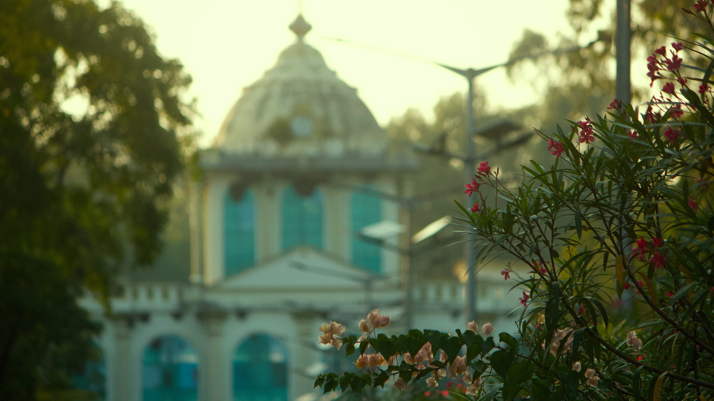

Programmes
Information to be added.
Department
Kuvempu University
Programme, eligibility and curriculum information will be added here.
Information to be added.
Information to be added.
Information to be added.
Research themes, projects and opportunities will be added here.

Departmental facilities, equipment and training information will be added here.
Loading faculty information…
PhD candidate profiles will be added here.
Publication records will be added here.
Department events will be added here.
Announcements will be added here.